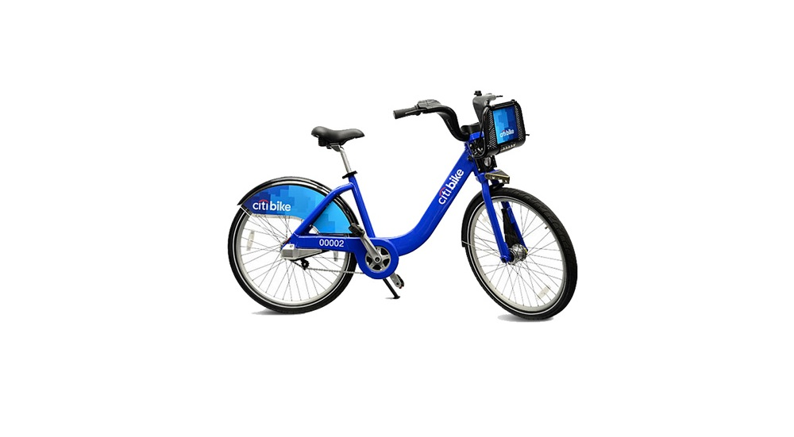
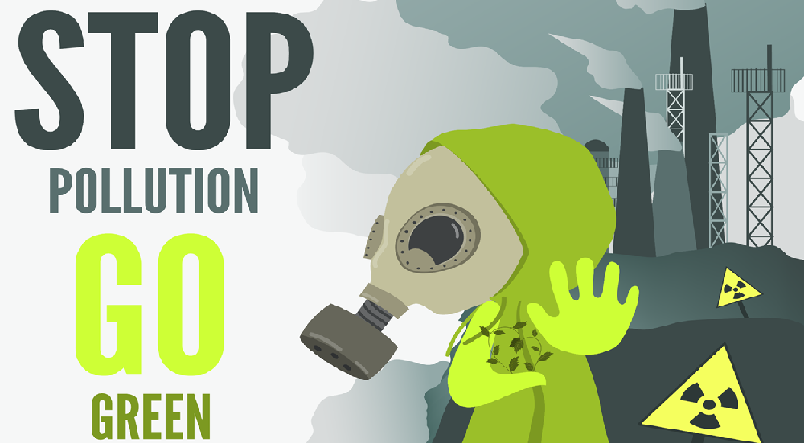
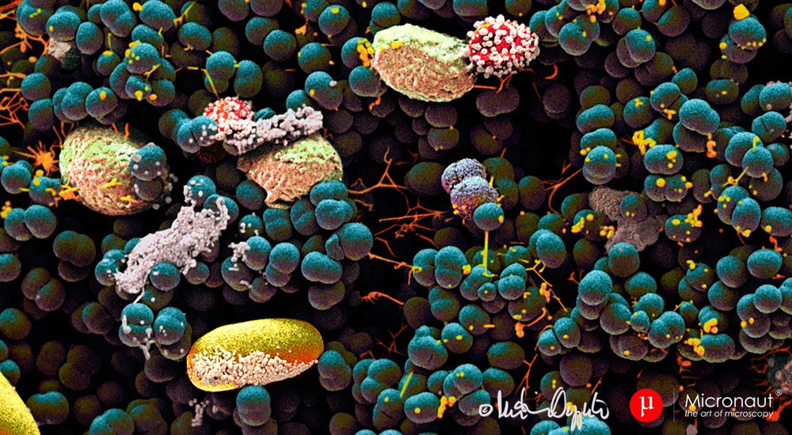
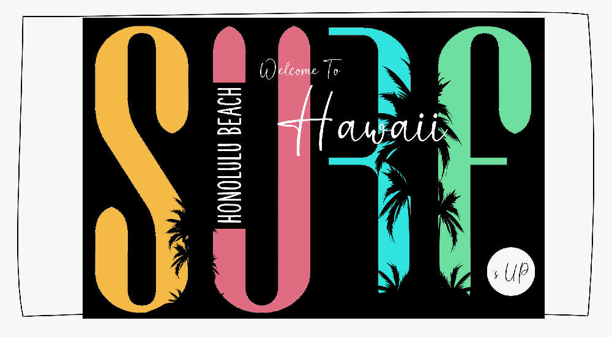
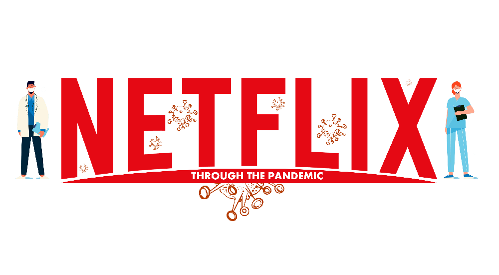

PORTFOLIO
Open Source Contributions
Machine Learning
Dashboard and Visulization

citibike 2013-2023
Interior Designer
#Python #Tableau

The HI and MR of Air Pollution
This study analyzes air quality data from different countries to assess the impact of pollutants on mortality rates and disease burden. Using visualizations, we present the spatial distribution of pollutants and quantify their impact on human health. Our findings will inform policies and Actions to mitigate the harmful effects of air pollution.
Tools and Languages: #Python #SQL Alchemy #JavaScript #Leaflet #Plotly JS #HTML #CSS #Flask #PostgreSQL #ETL #JSON

Belly Button Biodiversity
Explore Belly Button Biodiversity with an interactive dashboard. Study catalogs navel colonizing microbes, including dominant species found in over 70% of individuals.
Tools and Languages:#JavaScript #D3 #Plotly JS #HTML #CSS #Bootstrap
Database System and Data Analytics
Eat Safe, Love food magazine
Evaluated food hygiene rating data using MongoDB, PyMongo, and Pandas for the UK food magazine, Eat Safe, Love.
Tools and Languages:#Python #pyMongo #pandas #Regexr #JSON #matplotlib #MongoDB
Crowdfunding
This project implements the ETL process on crowdfunding data with Python and SQL. Raw data is extracted and transformed with Pandas and Python, and loaded into PostgreSQL via pgAdmin for optimized analysis.
Tools and Languages:#Python #pandas #Regexr #JSON #matplotlib #PostgreSQL #ETL #JSON
Mars Exploration Program
Successfully executed web scraping of NASA's Mars news website to gather the latest updates and information about the planet. Conducted comprehensive analysis of Mars weather data through web scraping, providing insights and trends.
Tools and Languages:#Python #pandas #splinter #Beautiful Soup #matplotlib

SURF’s UP
Designed and implemented a project focused on the analysis and exploration of Honolulu's climate data, aimed at helping individuals with their trip planning. Utilized advanced data analysis techniques to provide a comprehensive understanding of the climate in the area. Developed a climate application to aid in trip planning and provide valuable insights.
Tools and Languages: Python (SQL Alchemy, pandas, Flask, matplotlib, bokeh), HTML, JavaScript, CSS

Netflix Through the Pandemic
This study delves into the impact of COVID-19 on Netflix's stock performance from 2019 to 2022 by analyzing various key indicators. The indicators used in the analysis include the daily number of cases and deaths, data drift, and traditional stock market metrics.
Tools and Languages: Python (pandas, SciPy, matplotlib, bokeh, yfinance, Plotly)

Weather Prediction API
Travel companies can use this repository to target audience in bad weather through weather-targeted display or social campaigns. Offering flights, hotels, and resorts with aspirational creative highlighting sunny destinations increases the effectiveness of the strategy.
Tools and Languages: Python (pandas, SciPy, matplotlib, bokeh, citipy, hvplot, GeoView)
CONTACT
Feel free to contact me for any question. For open source projects,
please open an issue or pull request on Github. If you want to follow my work,
reach me on Twitter. Otherwise, send me an email at theidari.ali@outlook.com.
linkedin
twitter
github